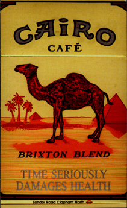

Cafe Cairo
 The Cafe Cairo is an exotic and wonderful place, known by few but loved by all who frequent it. It's a tea and coffee house that combines an upstairs in the best tradition of the Middle East with a basement of a much more modern, Western style. The cafe sells freshly made fruit cocktails and "smoothies", and teas and coffees of various impeccable pedigrees, as well as offering [shisha] (aka narghile, hubble-bubble, hookah) pipes and a range of flavoured tobaccos to smoke in them. Alcohol is not on offer here. The crown jewel of this establishment must be the back room: a long, warm place, with a tented roof and wall hangings, gentle lanterns to illuminate it, low wooden benches with numerous cushions and Arabic or Arabic-flavoured music playing - a faithful representation of a Middle Eastern coffee tent. The atmosphere is comfortable and friendly, and the air is full of the aromas of coffee, tea, and smoke. People tend to settle in here and stay for a long time, so you might need to get in early if you want somewhere to sit. Downstairs, the cafe offers a dark, sparkly-lit, loud music environment to get a bit of sensory overload in; I didn't spend any time down there myself when I visited but I'm told it can get very hot and smoky after a while. Prices I encountered: small pot of mint tea £2, large £3; fresh fruit smoothies about £3; shisha pipe £4 initially and £1.50 for refills. Later on in the night they start charging an entry fee to get in; I'm not sure quite how much it is but I think it's in the nature of a couple of pounds. Overall, the Cafe Cairo is a hidden gem, and an ideal place to escape from alcohol culture on a Friday night, or to spend a few pleasant hours in with some friends and a pipe, drinking glasses of mint tea. (But watch out, time can pass very quickly!)
Smoking policyThe Cairo has recently started displaying the following sign with regards to the smoking of certain substances on the premises.
How sad.
Position: latitude 51.465141, longitude -0.124517.
|
Revision 8. Last edited 2005-05-24 19:05:19. |
|
|
Places:
Entertainment and Culture: |